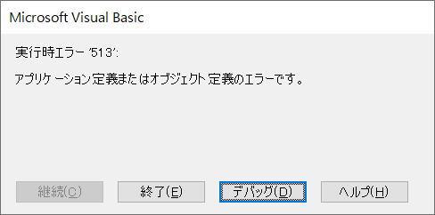
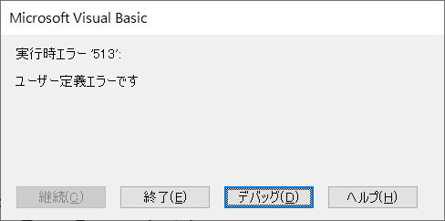
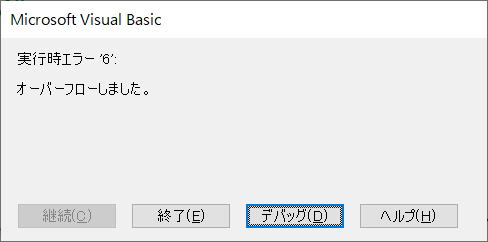

第134回.Errオブジェクトとユーザー定義エラー
VBA実行時には種々のエラーが発生します。
実行時エラーに関する情報は、Errオブジェクトには入っていますので、
VBA実行でエラー発生した場合は、Errオブジェクトを参照しエラー内容を調べることになります。
Errオブジェクトの使い方と、ユーザー定義エラーの生成方法について解説します。
目次
Errオブジェクト
VBA実行でエラーが発生すると、Errオブジェクトのプロパティにはエラーに関する情報が設定されます。
VBAコード内にそのインスタンスを作成する必要はありません。
| プロパティ | 説明 |
| Clear | Errオブジェクトのプロパティ設定をすべて解除します。 |
| Raise | 実行時エラーを生成します。 |
これらのメソッドについては、後のセクションで詳しく説明します。
Errオブジェクトのプロパティ
| メソッド | 説明 |
| Description | エラーに関連付けられている説明の文字列を取得または設定します。 |
| HelpContext | ヘルプファイルのトピックに対応するコンテキストIDを含む文字列式を返すか設定します。 |
| HelpFile | ヘルプファイルへの完全修飾パスを含む文字列式を設定または返します。 |
| Number | エラーを示す数値を取得または設定します。 Numberは、Errオブジェクトの既定のプロパティです。 |
| Source | 最初にエラーを生成したオブジェクトまたはアプリケーションの名前を指定する文字列式を取得または設定します。 |
DescriptionとNumber以外は使う事はないでしょう。
Cells(0, 0) = 1
このVBAを実行すると、以下のエラーが表示されます。
?Err.Description
On Error Resume Next
Cells(0, 0) = 1
Debug.Print Err.Number
Debug.Print Err.Description
このVBAを実行すると、イミディエイト ウインドウに以下が出力されます。
Errオブジェクト既定のNumberプロパティ
エラー未発生の状態は0です。
つまり、エラー発生時には0以外の値が設定されています。
If Err.Number <> 0 Then
MsgBox "エラー"
End If
Numberは既定のプロパティなので省略可能です。
If Err <> 0 Then
MsgBox "エラー"
End If
さらに論理値の判定は、0がFalseで、0以外はTrue
したがって、エラーかどうかの判定だけであれば、以下の記述で判定が可能です。
If Err Then
MsgBox "エラー"
End If
Errオブジェクトのエラー情報が解除されるのは
Exit Sub、Exit Function、Exit Propertyの実行後、または、End Sub、End Function、End Propertyの実行後にリセットされます。
On Error Resume Nextが実行されたとき
On Error GoTo ラベル が実行されたとき
ErrオブジェクトのClearメソッドが実行されたとき
現在のプロシージャで有効なエラー ハンドラーは引き続き有効です。
Errオブジェクトのエラー情報解除の使用例
Sub Clearの使用例()
Dim i As Long
On Error Resume Next
For i = 2 To 10
Cells(i, 2) = WorksheetFunction.VLookup(Cells(i, 1), Range("D:F"), 2, 0)
If Err.Number <> 0 Then
Cells(i, 2) = "検索値なし"
Err.Clear
End If
Next
End Sub
Errオブジェクトのエラー情報は、上述したとき以外はその情報が保持されます。
上記VBAでErr.Cleaがないと、
1度エラーが発生すると、プロシージャーを抜けるまで常にエラー情報が残っています。
つまり、一度でもVlookupの検索値が無い行が存在すると、それ以降は全て"検索値なし"となってしますます。
このVBAは、以下のように、On Error Resume Nextだけで記述することもできます。
Sub ResumeNextの使用例()
Dim i As Long
For i = 2 To 10
On Error Resume Next
Cells(i, 2) = WorksheetFunction.VLookup(Cells(i, 1), Range("D:F"), 2, 0)
If Err.Number <> 0 Then
Cells(i, 2) = "検索値なし"
Err.Clear
End If
Next
End Sub
Forループの先頭でOn Error Resume Nextしているので、ここでErrオブジェクトがリセットされています。
したがって、エラー処理ルーチンにおいてエラー発生する可能性がある場合は、
On Error Resume Next を使ってください。
Sub GoToの使用例3()
Dim i As Long
For i = 2 To 10
On Error GoTo ErrLabel
Cells(i, 2) = WorksheetFunction.VLookup(Cells(i, 1), Range("D:F"), 2, 0)
Next
Exit Sub
ErrLabel:
'エラー情報を使った
On Error Resume Next 'ここでErrオブジェクトはリセットされます
'エラーの可能性がある処理
MsgBox "検索値なし"
End Sub
On Error Resume Nextの実行でErrオブジェクトはリセットされてしまいますので、
必要なエラー情報はその前に取得しておく必要があります。
また、上記VBAで、On Error Resume Nextが無い場合、
その後の処理でエラー発生した場合、VBAはエラー停止してしまいます。
Sub sample()
Dim i, j
For i = 1 To 100
L01:
On Error GoTo L02
j = i / 0
L02:
GoTo L01
Next
End Sub
極めて単純化した例になりますが、
一見すると、上記VBAは永久ループしそうに見えますが、このVBAはエラー停止します。
On Error GoTo は、1度エラー発生した後はエラー処理が無効になります。
したがって、2度目のエラーは補足されません。
これをさける方法もあるようですが、このような使い方はしないことです。
Err.Raiseメソッド
Err.Raise number, source, description, helpfile, helpcontext
| 引数 | 説明 |
| number | 必須。 エラーの性質を識別する長整数型、0-65535の値を使用します。 範囲外の数値を指定した場合はRaiseメソッドがエラーとなります。 0-512 の値はシステム エラー用に予約されています。 513-65535 の値は、ユーザー定義エラー用に使用できます。 例えば、 エラー番号513を生成するには、vbObjectError + 513を設定します。 |
| source | 省略可能。 エラーを生成したオブジェクトまたはアプリケーションの名前を示す文字列式です。 |
| description | 省略可能。 エラーを説明する文字列式です。 指定しない場合、Numberの値が調べられ対応するメッセージが使われます。 Numberに対応するVBAエラーがない場合、"アプリケーション定義またはオブジェクト定義のエラーです。"が使用されます。 |
| helpfile | 省略可能。 このエラーに関するヘルプを確認できるヘルプ ファイルへの完全修飾パスです。 指定しない場合、VBAのヘルプ ファイルのドライブ、パス、およびファイル名が使用されます。 |
| helpcontext | 省略可能。 エラーに関するヘルプを提供するhelpfile内のトピックを識別するコンテキスト ID です。 省略した場合、Numberプロパティに対応するエラーに応じた、VBAヘルプ ファイルのコンテキスト ID が使用されます。 |
Err.Raiseの使用例
Err.Raise 513

Err.Raise Number:=513, Description:="ユーザー定義エラーです"

Err.Raise 6

システムで定義されたメッセージになります。
Errorステートメント
Err.Raise 513
Error 513
この2つのVBAは、結果としては同じになります。
Errorステートメントは、Number以外を指定できない為、
使用用途としては、VBAに用意されたエラーをシミュレーション目的で発生させる場合に使う事になります。
Error関数
errornumberを省略した場合は、最後に発生した実行時エラーに対応するメッセージが返されます。
errornumberが有効でない場合(65536以上)はエラーが発生します。
実行時エラーが発生していない場合、またはerrornumberが0の場合は、長さ0の文字列("")が返されます。
Debug.Print Error(13)
この結果は、イミディエイト ウィンドウに、
「型が一致しません。」
このように出力されます。
CVErr関数
CVErr 関数を使用することにより、どのような動作が行われたのかを知らせるエラー番号を返すことができます。
たとえば、CVErr 関数の戻り値をバリアント型以外の変数に直接代入することはできません。
エラー番号およびエラーメッセージ
マクロVBA実行時に発生するエラーの番号とエラーメッセージおよび簡単な理由と対策については以下を参照してください。
Sub ErrList()
Dim i As Long
On Error Resume Next
For i = 1 To 65535
Error i
Cells(i + 1, 1) = i
Cells(i + 1, 2) = Err.Description
Next
End Sub
これを実行すると、アクティブシートの2行目からエラーの一覧が出力されます。
出力された一覧を見ると、
| 735 | 一時ファイルに保存できません。 |
| 744 | 検索文字列が見つかりませんでした。 |
| 746 | 置換後の文字列が長すぎます。 |
このように513以降にも定義済のエラーが存在してるのが見て取れます。
実際にこれらがどのように使われているかは不明です。
また、
VBA実行では、この出力した一覧にないエラーも存在します。
Cells(0, 0) = 123
これを実行すると、以下のエラーが表示されます。
このエラーは、VBAにおいてはかなり頻繁に発生するものですが、上記では取得されません。
「513-65535 の値は、ユーザー定義エラー用に使用できます。」
となっていますが、実際には、上で紹介したエラー番号は避けたほうが良いでしょう。
ユーザー定義のエラー番号としてシステム予約の番号を使用しても、区別がつかない事以外の不都合はありませんが、一般的には使用しない事をお勧めします。
実行時エラー関連記事
同じテーマ「マクロVBA入門」の記事
第125回.Worksheetのイベントプロシージャー
第130回.テーブル操作の概要（ListObject）
第131回.テーブル操作のVBAコード（ListObject,DataBodyRange）
第142回.テーブル全件処理とデータ最終行（ListObject,DataBodyRange）
第127回.他のブックのマクロを実行（Runメソッド）
第128回.マクロをショートカットで起動（OnKeyメソッド）
第129回.レジストリの操作（SaveSetting,GetSetting,GetAllSettings,DeleteSetting）
第133回.引数の数を可変にできるパラメーター配列（ParamArray）
第134回.Errオブジェクトとユーザー定義エラー
第138回.外部ライブラリ（ActiveXオブジェクト）
第140回.Property {Get|Let|Set} ステートメント
新着記事NEW ・・・新着記事一覧を見る
VBA100本ノック 100本目：WEBから100本ノックのリストを取得｜VBA練習問題（3月3日）
VBA100本ノック 99本目：自動席替え（行列と前後左右が全て違うように）｜VBA練習問題（3月2日）
VBA100本ノック 98本目：席替えルールが守られているか確認｜VBA練習問題（3月1日）
VBA100本ノック 97本目：Accessデータを取得（グループ集計）｜VBA練習問題（2月27日）
VBA100本ノック 96本目：Accessデータを取得（マスタ結合&抽出）｜VBA練習問題（2月26日）
VBA100本ノック 95本目：図形のテキストを検索するフォーム作成｜VBA練習問題（2月24日）
VBA100本ノック 94本目：表範囲からHTMLのtableタグを作成｜VBA練習問題（2月23日）
VBA100本ノック 93本目：複数ブックを連結して再分割｜VBA練習問題（2月22日）
VBA100本ノック 92本目：セルの色を16進で返す関数｜VBA練習問題（2月20日）
VBA100本ノック 91本目：時間計算（残業時間の月間合計）｜VBA練習問題（2月19日）
アクセスランキング ・・・ ランキング一覧を見る
1.最終行の取得（End,Rows.Count）｜VBA入門
2.RangeとCellsの使い方｜VBA入門
3.変数宣言のDimとデータ型｜VBA入門
4.マクロって何？VBAって何？｜VBA入門
5.Range以外の指定方法（Cells,Rows,Columns）｜VBA入門
6.セルのコピー&値の貼り付け（PasteSpecial）｜VBA入門
7.繰り返し処理（For Next)｜VBA入門
8.セルに文字を入れるとは（Range,Value）｜VBA入門
9.マクロはどこに書くの（VBEの起動）｜VBA入門
10.とにかく書いてみよう（Sub,End Sub）｜VBA入門
このサイトがお役に立ちましたら「シェア」「Bookmark」をお願いいたします。
記述には細心の注意をしたつもりですが、
間違いやご指摘がありましたら、「お問い合わせ」からお知らせいただけると幸いです。
掲載のVBAコードは動作を保証するものではなく、あくまでVBA学習のサンプルとして掲載しています。
掲載のVBAコードは自己責任でご使用ください。万一データ破損等の損害が発生しても責任は負いません。